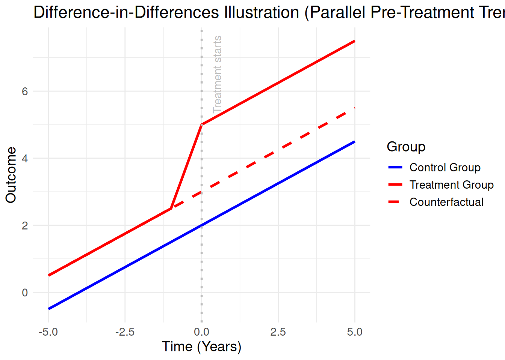

Warning: Using `size` aesthetic for lines was deprecated in ggplot2 3.4.0.
ℹ Please use `linewidth` instead.
So far, we have seen how to describe variables using descriptive statistics, as well as different statistical techniques to study relationships between variables, depending on their type (categorical or continuous). We have seen that linear regressions are useful for describing the relationship between a continuous dependent variable and either categorical or continuous independent variables, and that logistic regressions are useful for characterising binary outcomes.
In the exercises from the last class, regressions allowed us to describe correlations between variables—that is, associations. However, these regressions do not, in general, allow us to identify causal relationships. Important variables that drive the observed effect may be omitted, leading to biased estimates or spurious correlations.
Moreover, regression-based approaches often rely heavily on the researcher’s choices regarding which variables to include. This introduces a degree of arbitrariness. Consider the following example: if 99% of heroin users previously consumed cannabis, can we conclude that cannabis use causes heroin use? Clearly not—after all, 100% of heroin users have also consumed milk. This illustrates that simple associations are not sufficient to establish causality.
That explains why in fields such as policy analysis, medicine, and political science, there is a growing interest in statistical methods that aim to identify causal relationships between variables. A causal question is inherently counterfactual: it asks what would have happened in a different scenario. For instance, what would have happened to an individual if they had not received a treatment?
Causal analysis is therefore much more demanding than simple regressions. It requires stronger assumptions and careful research design. Causal inference addresses a specific type of research question. Some sociological approaches, especially more constructivist ones, question the very idea that variables can be cleanly isolated or that causal relationships exist independently “out there” in the world. In such perspectives, the goal may instead be to understand how variables are interconnected and how they jointly produce meaning through a chain of associative relationships.
There are several key approaches to causal inference designed to reduce bias. One of the most intuitive (and, arguably, convincing) is the difference-in-differences design. The empirical approach used to uncover a causal effect is referred to as an identification strategy.
In the next sessions, we will study two additional identification strategies: instrumental variables and regression discontinuity. These methods all rely on regression techniques, which is why the previous classes focused on building a solid understanding of regression analysis.
The intuition behind difference-in-differences (DiD) is quite simple: it involves tracking two groups over time—one that receives a treatment (e.g., a policy intervention) and one that does not.
The group that receives the treatment is called the treatment group.
The group that does not receive the treatment is called the control group.
By comparing the changes in outcomes over time between these two groups, we can estimate the effect of the treatment. The key idea is to compare the observed change in the treatment group with the counterfactual scenario—what would have happened to the treatment group if it had not received the treatment.
In practice, the counterfactual is often derived from the parallel trends assumption, which posits that, in the absence of treatment, the treatment and control groups would have followed similar trends before the intervention. If this assumption holds, any divergence in trends after the treatment can be attributed to the treatment itself.
Warning: Using `size` aesthetic for lines was deprecated in ggplot2 3.4.0.
ℹ Please use `linewidth` instead.
This is summarised on this figure, which shows the evolution of the outcome in two different groups, affected by the treatment in year 0. Before being affected by the treatment, the two groups evolve in parallel : yet, once the treatment is introduced, a new gap emerges between the groups. The dotted line shows the counterfactual, that is, under the parallel trends assumption, the evolution we would have expected for the treatment group, in the absence of treatment. The difference between that parallel counterfactual and the actual trend observed (in red), is the treatment effect.
Hence, the parallel trends assumption is the key requirement behind this causal method: it is only because we assume the counterfactual would have followed the control group’s trend that we can estimate the causal effect. As such, an estimation based on difference-in-differences is generally conducted in two phases : first, the estimation of the causal effect, then - as important as the first step -, the verification of the parallel trends.
Historically, the main estimator used for difference-in-differences estimations was the two-way fixed effects estimator (TWFE). It consists in computing :
\[\begin{equation} Y_{it} = \alpha_i + \beta_t + \text{Group}_i + \text{Period}_t + \delta \text{Group}_i \times \text{Period}_t + \epsilon_{it} \end{equation}\]
where \(\text{Group}_i\) and \(\text{Period}_t\) respectively equal to one for units \(i\) in the treatment group, and one for time periods \(t\) in post-treatment. \(\delta\) is the causal effect, also called ATT : average treatment effect on the treated (compared with the counterfactual of the treated). It is also possible to add covariates in that model \(X_{it}\), which generally do not modify the results.
Yet authors have recently shown that this method can lead to bias, especially when the treatment is staggered - that is, affecting multiple time periods -, or when it is heterogeneous (the effect is different depending on the characteristics of the treated units). Authors, such as De Chaisemartin or Callaway and Sant’Anna have therefore proposed alternative estimators, which are used in a very similar way as the TWFE.
The estimator proposed by Brantly Callaway and Pedro H. C. Sant’Anna provides an alternative to the traditional Two-Way Fixed Effects (TWFE) approach in difference-in-differences settings with staggered treatment adoption and heterogeneous treatment effects. The main idea is to move away from a single global regression and instead focus on a collection of more credible comparisons.
Concretely, the method estimates group-time average treatment effects, defined as:
\[\begin{equation} ATT(g, t) \end{equation}\]
where (g) denotes the period in which a group is first treated and (t) is the time period of interest. For each group (g), the treatment effect at time (t) is computed by comparing the outcomes of units first treated in period (g) with those of units that are not yet treated at time (t). This is crucial, as it avoids using already-treated units as controls, which is one of the main sources of bias in TWFE when treatment effects are heterogeneous or when treatment timing varies across units.
To see this more intuitively, consider a policy that is implemented at different dates across regions. Suppose Region A is treated in 2018, Region B in 2020, and Region C is never treated. When estimating the effect for Region A in 2019, both Regions B and C can serve as valid controls since neither has been treated yet. However, by 2020, Region B becomes treated, so only Region C remains a valid control group. Similarly, when estimating the effect for Region B after 2020, Region C is used as the comparison group. By structuring the analysis in this way, each estimated effect relies only on appropriate comparisons, avoiding contamination from already-treated units.
The estimator therefore produces a set of treatment effects for different groups and periods, such as:
\[\begin{equation} ATT(2018, 2019), \quad ATT(2018, 2020), \quad ATT(2020, 2021), \dots \end{equation}\]
These effects can then be aggregated to obtain an overall average treatment effect or used to construct event-study type analyses that describe how the treatment effect evolves over time. In this sense, the approach can be understood as estimating many simple and valid difference-in-differences comparisons and then combining them, rather than relying on a single regression that may implicitly use invalid comparisons.
In practice, this estimator can be implemented in R using the did package:
The following package(s) will be installed:
- did [2.3.0]
These packages will be installed into "~/work/methods_policyevaluation/methods_policyevaluation/renv/library/linux-ubuntu-noble/R-4.5/x86_64-pc-linux-gnu".
# Installing packages --------------------------------------------------------
- Installing did ... OK [linked from cache]
Successfully installed 1 package in 6.4 milliseconds.library(did)
# set seed so everything is reproducible
set.seed(1814)
# generate dataset with 4 time periods
sp <- reset.sim()
sp$te <- 0
time.periods <- 4
# add dynamic effects
sp$te.e <- 1:time.periods
# generate data set with these parameters
# here, we dropped all units who are treated in time period 1 as they do not help us recover ATT(g,t)'s.
dta <- build_sim_dataset(sp)
# How many observations remained after dropping the ``always-treated'' units
nrow(dta)[1] 15916# A tibble: 6 × 7
G X id cluster period Y treat
<dbl> <dbl> <int> <int> <dbl> <dbl> <dbl>
1 3 -0.876 1 5 1 5.56 1
2 3 -0.876 1 5 2 4.35 1
3 3 -0.876 1 5 3 7.13 1
4 3 -0.876 1 5 4 6.24 1
5 2 -0.874 2 36 1 -3.66 1
6 2 -0.874 2 36 2 -1.27 1In this example (based on Luis Sattelmayer), we will use the replication data from the article “Newspapers in Times of Low Advertising Revenues” Angelucci and Cagé, 2019). You can find the data here. You need to sign in (you can do it with your institution) to download the data.
In France 1967, the government introduced advertisements on TV programs. Angelucci & Cagé wonder if this will impact newspaper revenues. They believe that this introduction of advertisements impacted more national newspapers than local newspapers. Their treatment variable is the introduction of advertisements and the grouping variable is based on the level of newspapers (national versus local).
Codebook:
year: The year of the observation
id_news: A unique identifier for each newspaper
local: A binary indicator (0 or 1) representing whether a newspaper is local or national (1 = local, 0 = national)
national: A binary indicator (0 or 1) representing whether a newspaper is national or local (1 = national, 0 = local)
ra_cst: The advertising revenue of the newspaper (in constant (2014) euros)
ps_cst: The price of subscriptions for the newspaper. This variable measures how much the newspaper charges for its subscriptions, reflecting its pricing strategy and revenue from readers
qtotal: The circulation of the newspaper. This variable measures the number of copies sold, reflecting the newspaper’s readership and revenue from readers
after_national: A binary indicator (0 or 1) representing the interaction between a newspaper’s national status and the post-television advertising era. Specifically, it marks the period after a newspaper has started national circulation and also corresponds to times after the introduction or significant increase of television advertising. This variable is designed to capture the combined effects of a newspaper reaching a national audience and the competitive or complementary impacts of television advertising on newspaper revenues or strategies
ra_cst_div_qtotal: A derived variable representing the advertising revenue per unit of circulation (ra_cst / qtotal). This variable is calculated to assess the efficiency or effectiveness of advertising revenue in relation to the newspaper’s circulation size
You should start by importing the data and clean the data. In this case, the dataset is already quite clean. We just need to create a few variables and transform some variables in factors.
── Attaching core tidyverse packages ──────────────────────── tidyverse 2.0.0 ──
✔ dplyr 1.1.4 ✔ readr 2.1.6
✔ forcats 1.0.1 ✔ stringr 1.6.0
✔ lubridate 1.9.4 ✔ tibble 3.3.0
✔ purrr 1.2.0 ✔ tidyr 1.3.2
── Conflicts ────────────────────────────────────────── tidyverse_conflicts() ──
✖ dplyr::filter() masks stats::filter()
✖ dplyr::lag() masks stats::lag()
ℹ Use the conflicted package (<http://conflicted.r-lib.org/>) to force all conflicts to become errorsnewspapers <-
newspapers |>
select(
year, id_news, after_national, local, national, ra_cst, ps_cst, qtotal
) |>
mutate(ra_cst_div_qtotal = ra_cst / qtotal,
after_national = if_else(year > 1967, 1, 0),
after_national_placebo = if_else(year >= 1966, 1, 0),
across(c(id_news, local, national, after_national), as.factor),
year = as.factor(year))
glimpse(newspapers)Rows: 1,196
Columns: 10
$ year <fct> 1960, 1961, 1962, 1963, 1964, 1965, 1966, 1967,…
$ id_news <fct> 1, 1, 1, 1, 1, 1, 1, 1, 1, 1, 1, 1, 1, 1, 1, 3,…
$ after_national <fct> 0, 0, 0, 0, 0, 0, 0, 0, 1, 1, 1, 1, 1, 1, 1, 0,…
$ local <fct> 1, 1, 1, 1, 1, 1, 1, 1, 1, 1, 1, 1, 1, 1, 1, 1,…
$ national <fct> 0, 0, 0, 0, 0, 0, 0, 0, 0, 0, 0, 0, 0, 0, 0, 0,…
$ ra_cst <dbl> 52890272, 56601060, 64840752, 70582944, 7497788…
$ ps_cst <dbl> 2.287003, 2.204863, 2.131709, 2.427344, 2.34767…
$ qtotal <dbl> 94478.09, 96288.54, 97313.22, 101068.50, 102103…
$ ra_cst_div_qtotal <dbl> 559.8152, 587.8276, 666.3098, 698.3674, 734.334…
$ after_national_placebo <dbl> 0, 0, 0, 0, 0, 0, 1, 1, 1, 1, 1, 1, 1, 1, 1, 0,…Now, we can build the model. We use the logarithm of the advertising revenue (to help normalise the distribution of our variable). Next, we need to include the time and treatment variables so, national and after_national variable. Do not forget that you need the interaction effect. Furthermore, as we are using the whole dataset (observations from every year), we should introduce a fixed effect for year to control for linear time trends that would affect all newspapers. Finally, as we are comparing different newspapers over more than two years, we should also include a fixed effect for the newspaper. This would control for all unobserved and time-invariant differences between newspapers.
NOTE: 144 observations removed because of NA values (LHS: 144, RHS: 1).The variables 'national1' and 'after_national1' have been removed because of
collinearity (see $collin.var). did
Dependent Var.: log(ra_cst)
national1 x after_national1 -0.2175. (0.1164)
Fixed-Effects: -----------------
year Yes
id_news Yes
___________________________ _________________
S.E.: Clustered by: id_news
Observations 1,052
R2 0.98576
Within R2 0.04730
---
Signif. codes: 0 '***' 0.001 '**' 0.01 '*' 0.05 '.' 0.1 ' ' 1Now, we can interpret our results. As you can see, the national and after_national variables were dropped, this is because of collinearity. In this case, we have collinearity because we add time and newspaper fixed effects which capture both national and after_national information. So, the model only keeps the interaction. When you use feols() the function automatically drops variables that are collinear. This is not the case with lm(). Furthermore, we see that the coefficient is negative, meaning that the introduction of ads did decrease revenues among national newspapers. However, this coefficient is not statistically significant, meaning that we cannot infer our results to the whole French newspaper population.
We can do a placebo test. Here, the interaction coefficient is not significant, meaning that we cannot reject the parallel trend assumption. As we have more than one year before the treatment, you should do more than one placebo test.
NOTE: 144 observations removed because of NA values (LHS: 144, RHS: 1).The variables 'national1' and 'after_national_placebo' have been removed because
of collinearity (see $collin.var). did_placebo
Dependent Var.: log(ra_cst)
national1 x after_national_placebo -0.2289. (0.1187)
Fixed-Effects: -----------------
year Yes
id_news Yes
__________________________________ _________________
S.E.: Clustered by: id_news
Observations 1,052
R2 0.98580
Within R2 0.05004
---
Signif. codes: 0 '***' 0.001 '**' 0.01 '*' 0.05 '.' 0.1 ' ' 1